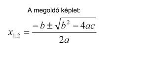

A bemásolt Python forráskódot a ▶️ gomb (vagy Shift + F10) lenyomásával elindítjuk a programot ezután a program bekéri a paramétereket és végül kiadja az eredményeket. Python az eredményeket külön-külön sorba írja ki nehogy össze legyen keverve.


16. század végén a matematikai jelölést és szimbolikát François Viète amatőr-matematikus vezette be Franciaországban. 1637 -ben, amikor René Descartes kiadta a La Géométrie-t, megszületett a modern matematika, és a másodfokú képlet felvette a ma ismert formát. Az összes esetet lefedő másodfokú képletet először Simon Stevin szerezte meg 1594-ben. Gyakran állítják, hogy a babilóniaiak (kb. i.e. 400) voltak az elsők, akik másodfokú egyenleteket oldottak meg. Ez túlzott leegyszerűsítés, mivel a babiloniaknak nem volt fogalmuk az „egyenletről”. Kidolgoztak egy algoritmikus megközelítést a problémák megoldására, amelyek a mi terminológiánk szerint másodfokú egyenletet eredményeznének.
Labdák, nyilak, rakéták és kövek. Amikor eldobsz egy labdát (vagy kilősz egy nyilat, kilősz egy rakétát vagy dobsz egy követ), az felmegy a levegőbe, haladva lassul, majd egyre gyorsabban és gyorsabban esik le a súlya miatt és egy másodfokú egyenlet megmondja mindenkori helyzetét!
A diszkrimináns a gyakorlatban az adott magasabb fokú egyenletek gyökeinek számát határozza meg, dönti el. Mivel az algebra alaptétele csak a maximálisan szóba hozható gyökök számát definiálja, a valós gyökök számát azonban nem, ezért is volt szükséges minden lineárisnál magasabb fokú egyenlet esetében a diszkrimináns felfedezésére.
Linkek, források:Másodfokú egyenlet, Másodfokú függvény, Másodfokú egyenlet megoldóképlete, A másodfokú egyenlet diszkriminánsa, A program, Mikor találták fel a másodfokú képletet?, Diszkrimináns, Google képek